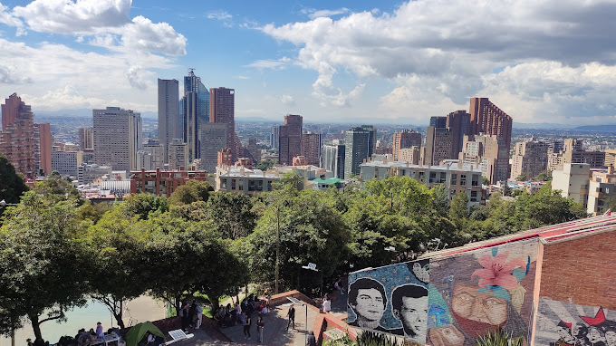

La evaluación de los aprendizajes en todas las etapas de la educación son siempre un tema bastante discutido por distintos autores para este caso el abordaje proporcionado por la doctora Lilia Reyes permite llevar a cabo un portafolio para la evaluación de los aprendizajes en la educación superior por tal motivo se realiza este portafolio virtual para la materia Formación Integral de Educadores (F.I.E), con el fin de explorar métodos atípicos de aprendizaje poco vistos desde la ingeniería.La Formación Integral de Educadores (F.I.E) busca que los pedagogos en formación reflexionen sobre el conocimiento de la formación docente, que se cuestionen la realidad desde distintas ópticas ante los retos que plantea el mundo actual y nuestro país. Este portafolio está planteado desde una vista ingenieril.
Para este caso la ingeniería catastral y geodesia es en sí una ingeniería holística donde el campo de las ciencias sociales y humanas no se deben dejar de lado. Finalmente, el desarrollo del portafolio “una exploración vocacional” se verá seccionada en cuatro partes principales donde cada una tendrá su explicación. A lo largo de esta primera página podrá encontrar la introducción a la material y un camino guía del porqué de este portafolio así como también podrá encontrar objetivos y la didactobiografia tanto en texto como en video para el disfrute y comprensión de este.
- Realizar una corta exploración vocacional en la pedagogia
- Desarrollar el tema de profundización Ética y Educación
- Permitir que el portafolio sea una experiencia agradable para el usuario